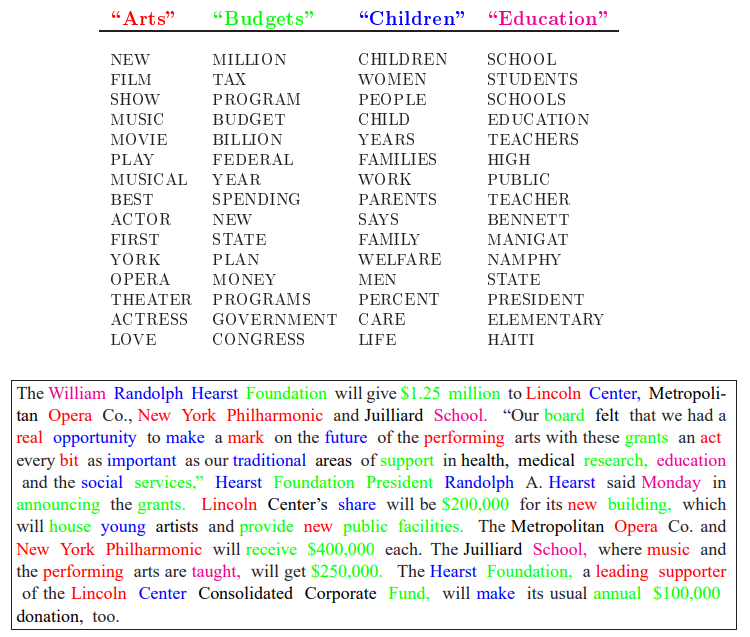

Pengantar
Contents
Pengantar¶
Pada tutorial ini, kita akan belajar tentang pemodelan topik, beberapa aplikasinya dan juga lebih mendalam dibahas salah satu model tentang teknik Latent Direchlet Allocation (LDA)
Untuk mempelajari tutorial ini diharapkan memahami terlebih dahulu distribusi probabilitas multivariate.
2. Pemodelan Topik¶
2.1. Apa itu Topic Modeling?¶
Dalam penambangan teks, kumpulan dokumen, seperti posting blog atau artikel berita, yang telah dikumpulkan menjadi beberapa kelompok sehingga kita dapat memahaminya secara terpisah. Pemodelan topik adalah metode untuk mengelompokkan dokumen dengan pembelajaran tak terawasi, mirip dengan pengelompokan pada data numerik, yang menemukan kelompok item pada suatu data
Ringkasnya, Topic modeling adalah metode pembelajaran terawasi dan inputnya adalah corpus dari suatu kumpulan dokumen dan untuk menghasilkan topik-topik tertentu. Setelah model topik dibuat, kita dapat menyatakan suatu dokumen sebagai kombinasi dari topik topik yang diperoleh. Marilah lihat contoh berikut

Pada contoh ini, setiap dokumen dihubungkan dengan setiap topik sesuai dengan bobot-bobotnya. Oleh karena itu, kita dapat merepresentasikan dokumen sebagai vektor, dimana kolom-kolomnya adalah derajat keterkaitan dengan setiap topik.
Misalkan kita ingin memodelkan “Jurassic Park” sebagai kombinasi dari topik topik dalam proporsi seperti ini.
Dinosaurs”: 97%
“Amusement Parks”: 49%
“Extinction”: 10%
Dalam kasus tersebut, representasi vektor dokumen ini menjadi [0.97, 0.49, 0.1]
Apaa yang telah kita bahas adalah pemodelan topik yang dapat digunakan untuk mendapatkan embedding vector dari suatu dokumen.
2.2. Applications¶
Topic modeling memiliki beberapa bentuk aplikasi yang menarik diantaranya adalah :
Memahami bidang
Menemukan perubahan atau trend baru dalam bidang kita
Melakukan Encode text sebagai vector embeddings
Search Personalization
Pemodelan users’ preference untuk pencarian
Menemukan penulis dari dokumen tertentu
Memprediksi dan menginterpretasikan aktifitas sosial and Interpretation of social activity
Mesin penterjemah
3. Latent Dirichlet Allocation¶
3.1. Introduction¶
Latent Dirichlet Allocation (LDA) adalah model a **statistical generative ** yang menggunkan Dirichlet distributions.
Kita mulai dengan corpus dari \(M\) dokumen dan berapak banyak topik \(K\) yang akan ditemukan dalam corpus-corpus tersebut. Keluaran dari topik model adalah \(M\) dokumen tersebut dinyatkan sebagai kombinasi dari \(K\) topik
Singkatnya, semua yang dilakukan algoritma algoritma pemodelan topik adalah menemukan bobot hubungan antara dokumen dan topik dan antara topik dan kata-kata
Ada tiga hyperparameter pada LDA:
Faktor padat Dokumen-topik (\(\alpha \)) artinya proporsi topik-topik setiap dokumen
Faktor pada topik-kata (\(\beta\)) artinya banyaknya kata-kata yang ada pada setiap topik
Banyaknya topik yang diharapkan(\(K\)). artinya berapa banyak topik yang dihasilkan dari kumpulan dokumen-dokumen tersebut
Hyperparameter \(\alpha\) menentukan seberapa banyak subyek yang terkandung pada dokumen. Semakin rendah nilai \(\alpha\) menunjukkan dokumen memilki beberapa subjek didalamnya, kemudian semakin tinggi nilai \(\alpha\) menunjukkan bahwa dokumen-dokumen tersebut akan memiliki banyak topik didalamnya.
Hyperparemeter \(\beta\) menentukan seberapa banyak distribusi kata pada masing masing subjek atau topik. Subyek dengan nilai \(\beta\) rendah biasanya memiliki beberapa kata, selanjutnya topik dengan nilai \(\beta\) tinggi akan memungkinkan memiliki banyak kata-kata.
Hyperparameter \(K\) menyatakan banyaknya topik yang ada pada kumpulan dokumen. \(K\) biasanya ditentukan nilainya berdasarkan pakar bidang tertentu. Pilihan lainnya adalah untuk melatih model LDA dengan beberapa variasi dari nilai \(K\) kemudian menghitung ‘Coherence Score.’
Berikut contoh pemodelan topik Blei et al. dimana kata-kata untuk setiap topik (arts, budgets, children, and education) . Teks yang berwarna pada bagian bawah dari gambar adalah menunjukkan suatu dokumen dengan terdiri dari beberapa kumpulan kata kata dari beberapa topik
{kind=link}

Fig. 3 Pemodelan Topik¶